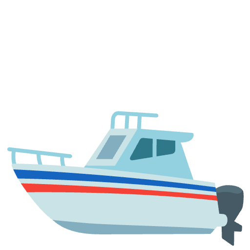
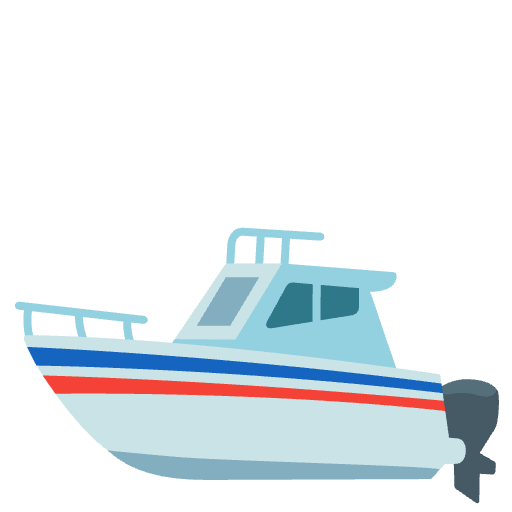
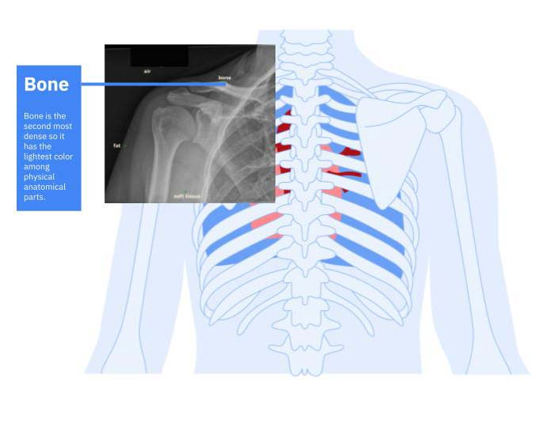

Learning Journal 4
My classmate Gracie had a beautiful hand-drawn anatomy portrait with a x-ray overlay. Her project is helping people better read x-rays. I thought her image was very clear and I love how she connected an actual photograph with a digital drawing. She used amazing tonal contrast with the softness of the digital drawing and the sharp dark x-ray imagery. The warmer tones of the portrait provide a "warmth" that contrasts the "cold" x-ray overlay
To push the narrative even further I would say to lean into the "warmth" maybe create scenery around the anatomy to make the illustration feel more apart of a bigger agenda. Add leaves for nature and bring anatomy into differnt themes that transend typical imagery. Make the design feel alive and not stagnant.
